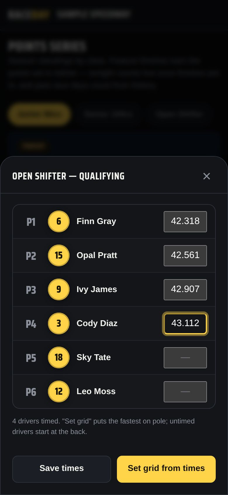
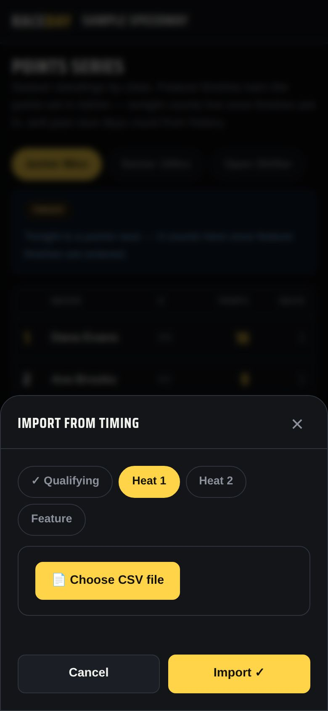

-
Choose a qualifying format
In Admin → Race classes, set Format to Qualifying · 1 heat (one qualifying heat, then mains) or Qualifying · straight to mains (no heats — qualifying order seeds the mains directly).
-
Sign-up works the same
Drivers still sign up normally. Their pill is a placeholder until qualifying times replace it.
-
Enter qualifying times
On the Lineups tab, tap ⏱ Qualifying times on the class. Type each driver's time, then tap Set grid from times — fastest goes on pole, untimed drivers start at the back. Save times records them without changing the grid.

Qualifying times -
Or import from your timing system
Tap 📥 Import from timing, pick the step (Qualifying, Heat, or Feature), and 📄 Choose CSV file. Choose the class or use the file's class column, check the preview — ✓ Matched, + New, ⚠ Conflict, — Skip — then tap Import ✓.

Import from timing
Good to know
- MotoSponder exports are recognized automatically. Other timing CSVs work too — RaceDay reads the column headers (transponder, number, name, class, position, time).
- Straight-to-mains classes show “Qualifying order — seeds the mains directly” on Lineups and “Seeding — qualifying order” on Score.
Next guides
Still stuck? The Field Manual walks through every screen, and the FAQ covers common questions. Or just ask.
Email a question →